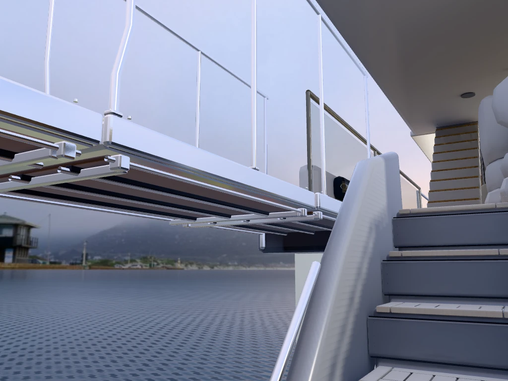
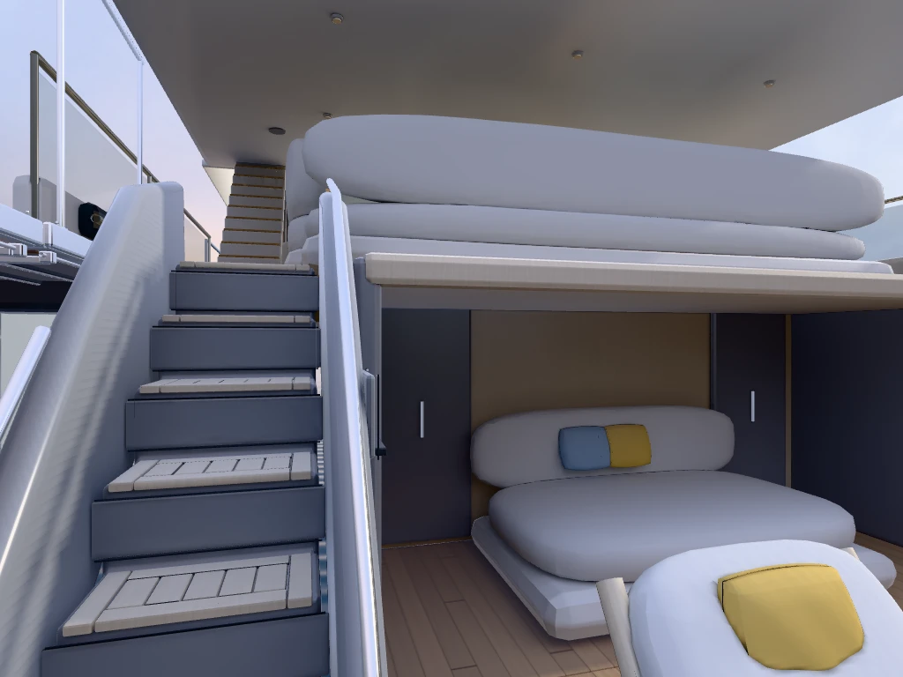

La pasarela es fija y caminable. Esta candidata todavía no cumple la correspondencia visual exigida con la VR. La versión habitual conserva su geometría y recorrido anteriores.
Abrir la candidata · Abrir la versión habitual

Incluye tres tramos, perfiles y guías, montantes acodados, pasamanos, teca y una escalera entre envolventes moldeadas. Las dimensiones y la construcción oculta son estimadas. No se añade un muelle.
La escena Blender editable y sus fuentes están preparadas. Su descarga desde GitHub Releases está pendiente de completar la subida autenticada.
Las comparaciones privadas usan cuadros nativos de 8 × 8 y 4 × 4 píxeles, ocho encuadres y dos caras completas de 2048². Las imágenes VR no se publican. Generar la cuadrícula no aprueba sus celdas: ninguna se declara aceptada.
La escalera, el desembarco, el montaje y varios montantes aún presentan discrepancias de proyección. No se ha alcanzado el límite de cuatro píxeles ni el 95 % de bordes dentro de seis píxeles. El informe separa las mediciones diagnósticas de la aceptación independiente pendiente.

Comprobados: ida y vuelta, extremo libre, teclado, controles táctiles, separación de niveles, carga lenta, fallo y reintento, cancelación y tres ciclos de cambio de zona. Se mantienen hasta dos zonas detalladas. Las pruebas gráficas usan Chromium/SwiftShader; no acreditan FPS de una GPU real.
Se verificaron sin cambios los 629 archivos originales, 115 activos de maquinaria y el documento LDM-VR-EST-001. La geometría del cockpit permanece intacta. Los HDR originales de estas dos zonas se conservan en la autoría y sus copias de distribución usan compresión DWAA con error documentado.